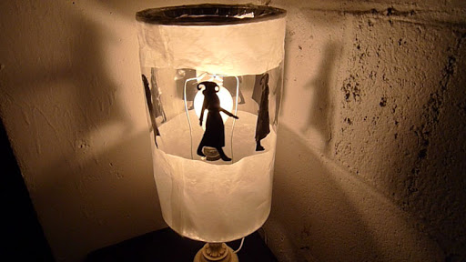
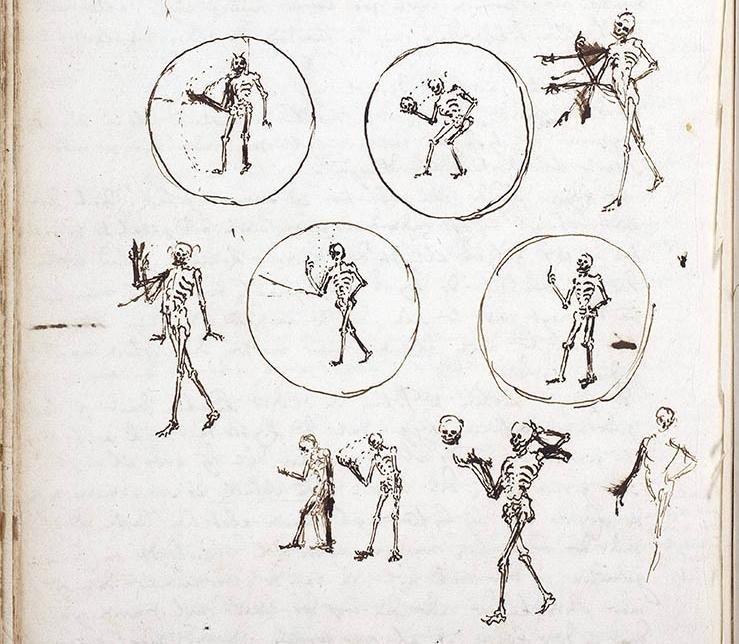
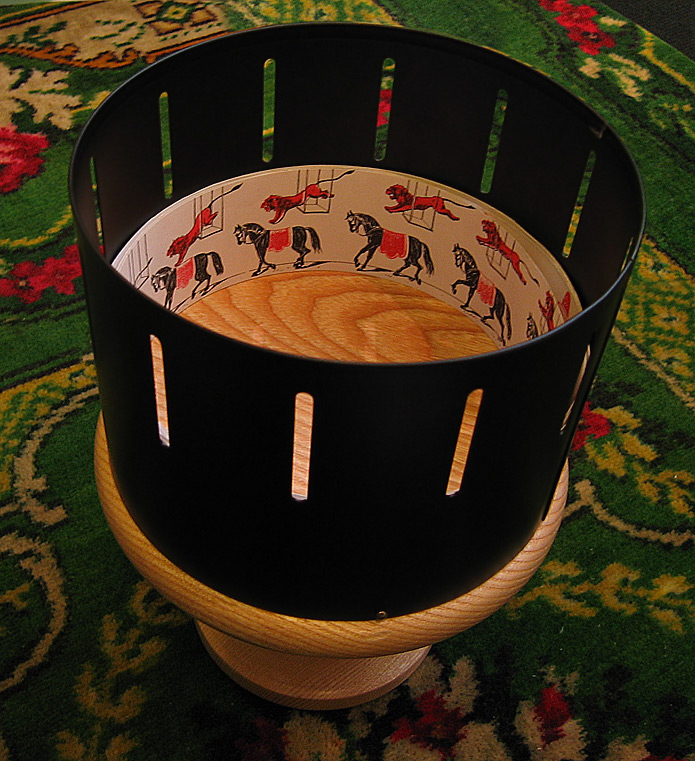
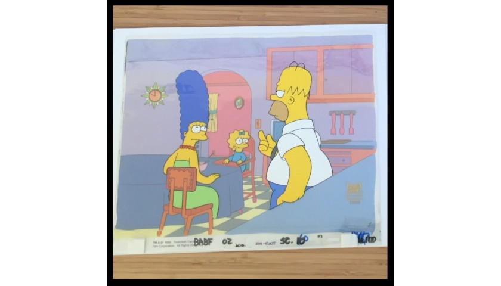
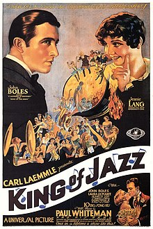
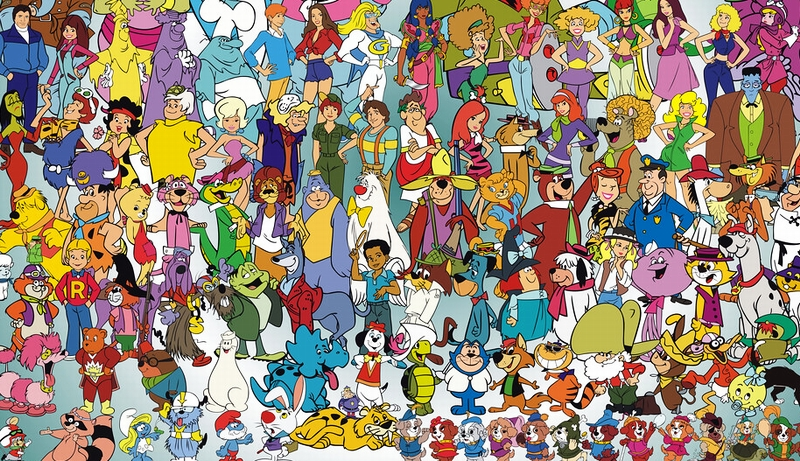

Tech: Now and Then

15 March 2021
One of the oldest types of "animation", multiple drawings made to resemble motion. Found in an Egyptian burial chamber.
Animation is an extremely strange thing. It's mostly an effect that's just a bunch of images that swap out frame-by-frame that tricks the eye into seeing movement, though it can be much more interesting than the average film. So, where did we first learn to make use of this? When did we start learning how to trick ourselves into seeing non-alive images move? Well, there's no real definite start, but there's a decent idea...
The first kind of animation was images that were painted on walls that resembled characters in motion. The first known examples of trying to capture this would be in the paleolithic time, where animals were drawn on the wall with many legs to show movement. With a flickering flame, the image would appear to move due to the constantly changing fire. In 5,200 BCE Iran, a bowl with 5 sequential images was found that illustrate motion, and in Egypt, there's a mural in the tomb of Khnumhotep that depict a wrestling match made in 4,000 BCE. The Parthenon Frieze had a similar mural in 400 BCE, and the anatomical studies of Leonardo da Vinci also showed movement through its four different angles of a man in the 1500's CE.
An example of a "trotting horse lamp", or a lamp that resembles movement.
The closest thing to resembling lifelike animations in 1000 CE would be the "trotting horse lamp". The way this lamp worked was that rising air would come up and spin the lantern due to its holes in the top that pushed the lantern when heat went through. The reason why they have "horse" in the name is that most were made with horses, with some even having wires to move the horse's head and feet.
The earliest form of projection on a screen would be shadow play, or the acts of having figures move on a screen for entertainment. They would be typically done with flat white screens and paper puppets that would move with articulated arms. The origin of this is found in Asia, with the Ottoman empire practicing it in 900 CE. This would continue in the end of the 18th century, where Francois Dominique Seraphin would host elaborate shadow shows, sometimes involving clockwork mechanics.
A sketch of an idea for Death taking off his head in a Magic Lantern animation.
The next major advancement in lifelike animation was the "Magic Lantern", created by Chrisitiaan (it had two a's) Huygens in 1659. What this device did was take glass slides and move certain parts of the slide that had extra parts, like an extra hand or thing that would seem to make something move. How the things moved was either by hand via a crank, or a mechanical clockwork-like movement that made the glass slide move in a fixed pattern. A more advanced version of this was done in 1770 by Edme-Gilles Guyot, which showed how to project a Magic Lantern image on smoke to create a transparent image of something. This technique was used in phantasmagoria (horror) shows, and it could be made larger or smaller by moving it further/closer to the audience. This technique is used in the Disney Haunted Mansion ride in Orlando, Florida with its ballroom scene, seen here. Warning: volume is kinda loud in the clip.

An image that shows Micheal Faraday's experiments with wheels that simulated motion through forced perspective.
Disclaimer: While many of the upcoming pieces were mostly seen as optical illusions or toys, they still furthered the limits of lifelike animation at the time. An article in a 1821 issue of the "Quarterly Journal of Science, Literature, and The Arts" raised interest in optical illusions through rotating wheels. A few years later, Peter Mark Roget showed the mathematical details about curvatures and how they appeared to make seamless motion to the eye. This is seen as the basis of the theory of "Persistence of vision", or how a film is seen as a fluid movie and not a bunch of still images. The Thaumatrope was invented by W. Phillips in 1825, and this device became a popular toy that depicted motion through a moving wheel.
The phenakisticope is the first true animation device that used rapid successive substitution of images to show movement. The pictures are put around an internal disk, and they are visible through a small slit in the giant disk that encases them. You could also have many more frames on a phenakisticope, as they would only show a small viewpoint. The device is also known as the Fantascope and the Stroboscope.
An image that shows the toy Zoetrope and its multiple frames that would show through to the viewer.
The Zoetrope was created in 1833 by Simon Stampfer, which was originally an idea of putting a Stroboscope in a cylinder. This was also suggested by William George Horner, a british mathematician in 1834. William Ensign Lincoln invented a Zoetrope with interchangeable images in 1865, and this version was given to Milton Bradley and Co. who advertised it a year later. Then, the flipbook was found (known as the Kineograph) in 1868 by John Barnes Linnett. A flipbook essentially is a book that the reader flips through quickly to illustrate frames of movement. Many early animators have gotten inspiration from flipbooks.
The first animated films were shown in Theatre Optique, which was created by Charles-Emile Reynaud in 1888. From 1892 to 1900, Reynaud gave over 12,800 shows for more than 500,000 visitors at the Musee Grevin in Paris. His movies had about 300-700 frames each, and they'd often flip back and forth to extend the time. The average runtime for these movies were 10 to 15 minutes. The background was projected separately from the animation, which is similar to how animation is done nowadays. Piano music, song, and some dialogue was usually done live while the movie was playing, but sometimes sound effects would be done via electromagnet. The program included Pauvre Pierrot (seen here), Un bon bock (lost to time), and Le Clown et ses chiens (lost to time). Something to note though: These movies were not done on film, rather on a long perforated transparent strip that would be wound between two spools.
The first known use of animation on film would be in "The Enchanted Drawing" by J. Stuart Blackton in 1900. Even though this had mostly similar frames with only slight changes, it was still revolutionary. It featured sketches of a face, cigars, a bottle of wine, and a glass. The next major step in animation was done by Winsor McCay, who created his film Gertie the Dinosaur (seen here) in 1914. The most innovative thing about this movie was how detailed the drawings were and that it also combined live action with the drawings. Originally it was used for a vaudeville-kind of act where McCay would "talk" to Gertie and have him respond. By the end of the film, he would get on the dinosaur and ride away through the film.
An example of an animation cel from the Simpsons, which is of the episode "Hello Gutter, Hello Fadder" aired on November 14th, 1999.
In 1914, John Bray changed the way animation would be created forever. This technique was called the cel technique, which involved animating moving objects on a transparent sheet while the backgrounds are stationary. This, also while using an "assembly-line" method for animating (passing frame by frame through then photographing it) allowed John Bray Studios to create Colonel Heeza Liar, the first-ever animated series. Another innovative technique was developed just a year later with rotoscoping, which is using live-action film as a reference to create realistic animated movements. This was used in "Out of the Inkwell", an animated series that evolved from Dave Fleischer performing as a clown (the character is now known as Koko the Clown). Another iconic character would be Felix the Cat, created in 1919 by Otto Messmer of Pat Sullivan Studios. Felix was also the first character to have official merchandise.
The biggest innovation of the 1920's was the inclusion of sound on film reels. Inkwell Studios was able to produce 19 sound cartoons in its "Song Car-Tunes" line from 1924 to 1926. A character also had a bit of lipsync, so this also makes it the first time that a character would actually speak through a cartoon. Walt Disney also started to become popular in the animation scene, hiring people left and right to start a studio in 1927. Oswald the Rabbit was created and became a hit, but was eventually abandoned for Mickey Mouse a year after. Mickey became an immediate hit with the classic clip "Steamboat Willie", which wowed audiences so much that Mickey became cemented into history.
The poster of the movie "King of Jazz", the first film to feature hand-drawn animation.
The biggest advancement of the 30's was the addition of technicolor. The first animation to use this was a cartoon segment in the feature film "King of Jazz" in 1930, which had two-strip Technicolor (2 colors). Walt Disney bought the exclusive rights to 3-color technicolor for 2 years in 1933 to have extra appeal to his cartoons, which eventually worked through his "Silly Symphonies" line of cartoons. This came to a head with Disney's "Snow White", which was a box office success due to being a full-color feature length animated movie (although it was barely considered a feature film, as it's only 41 minutes long). The next major studio for animation was Warner Brothers with their Merrie Melodies and Looney Tunes series. Originally the two shows were, well, two shows that were just made by the same studio. The characters were sometimes used interchangeably, then the series names became interchangeable due to the similarities between them. There was also the creation of Betty Boop and the animated Popeye series by Flesicher Studios.
Some animation during the 40's was used for propaganda, such as America's "Der Fuehrer's Face" by Walt Disney in 1943 and Japan's "Momotaro: Sacred Sailors" by the Ministry of the Navy of Japan in 1944. Disney was trying to be a bit more ambitious with their release of "Bambi" in 1942, but it wasn't received well due to its darker tones and mood. Many other cartoons were animated shorts featuring furry animals, like Sylvester the Cat and Tweety Bird and Chip 'n' Dale. Paramount bought out Fleischer Studios and their animations, including their recent Superman and Popeye adaptations.
The major issue with "funny animal" cartoons in the 40's and 50's was that many were produced for general audiences, so they usually had violence or sexual innuendo that was not too greatly received by parents or children. Due to this, children's cartoons on TV became to be shown in the early mornings on weekends, which is where the phrase "saturday morning cartoons" came from. Due to the mass production of cartoons during this time with limited budgets, many cartoons suffered from weak plots and choppy animation. Not much else happened during this time.
A giant cluster of Hanna-Barbera characters, which became incredibly popular due to the primetime slot of these characters.
During the 60's, many bands were beginning to have animated music videos. There was also the popularization of Hanna-Barbera cartoons, which had "The Flintstones" be the first primetime animated show. "The Yogi Bear Show", "The Jetsons", and "Scooby-Doo, Where Are You!" were some other hits produced at the time. Due to Walt Disney's death in 1966, Disney was unable to create any financially successful movies after "The Jungle Book" until 1989 with "The Little Mermaid". Then there was the popularization of Japanese animation, better known as "anime". English viewers got used to seeing characters like Astro Boy and Speed Racer, which are still relatively known today.
Many animated films during the 70's were made with a more adult-minded approach, with many being... not school appropriate, to say the least. There was also the adaptation of "The Lord of the Rings" in 1978 that used rotoscoping for its massive battle scenes, which had a continuation in "The Return of the King" only a year later.
In the 80's cartoons had become very formulaic. Most of the cartoons made during this time had become glorified advertisements, like with "He-Man and the Masters of the Universe", "G.I. Joe", "The Transformers", and "My Little Pony". On the other hand, anime was doing much better and had a very iconic new genre, which was mecha. What that boils down to is giant robots fighting things in the future. There was also an increasing direct-to-home video market, which made these films much easier to transport across nations. This also brought other things to light more things I will not talk about. Many iconic films were produced during this time though, as there's many films like "Castle in the Sky", "My Neighbor Totoro", and "Kiki's Delivery Service", to name a few.

A collage of Disney movies that were made during the 90's-00's, commonly reffered to as the "Disney Renaissance" due to their quality and profit.
The 90's/00's will be the last period I talk about. Disney started to boom again after the creation of "The Little Mermaid", with their many 90's films like "The Beauty and the Beast" (First nominated animated film for best picture, 1991), "Aladdin" (1992), and "The Lion King" (highest grossing animated film of all time, 1994), to name a few. There was also the beginning of CGI being used, with 1995's "Toy Story" and 2001's "Shrek". Animation studios started to look more toward computer animation, which made animation the way it is today.
In conclusion: Animation has changed a lot. Originally, it was just a person seeming like they were walking by the spinning of a wheel. Now it's incredibly expensive computer animation that looks nearly lifelike. Over the course of 200 years, we got from cardboard to microchips. Technology is weird.